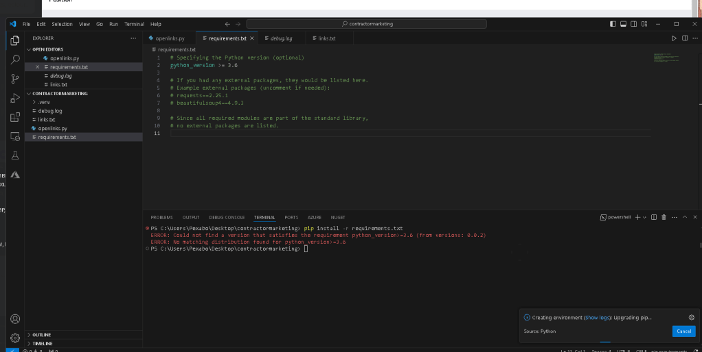
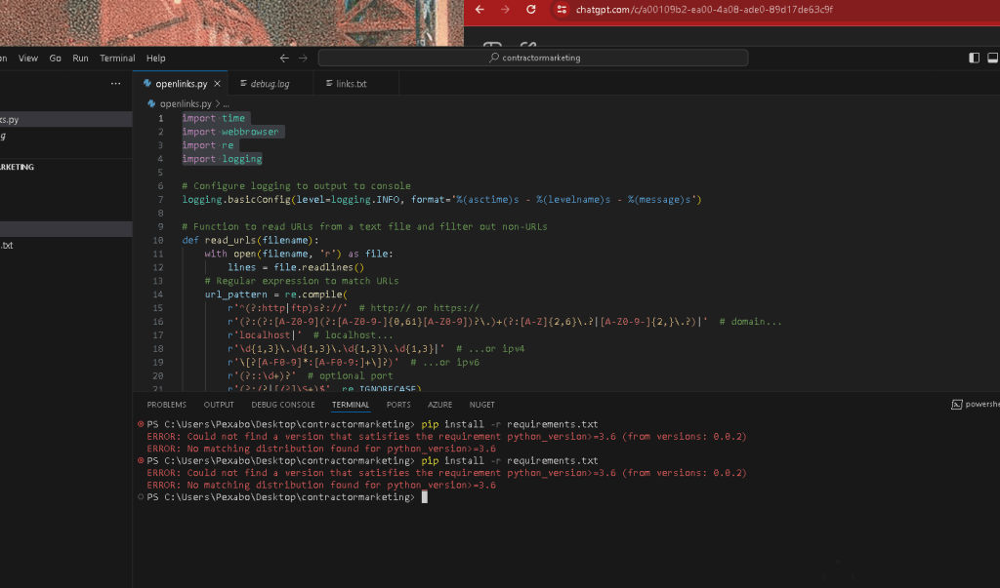
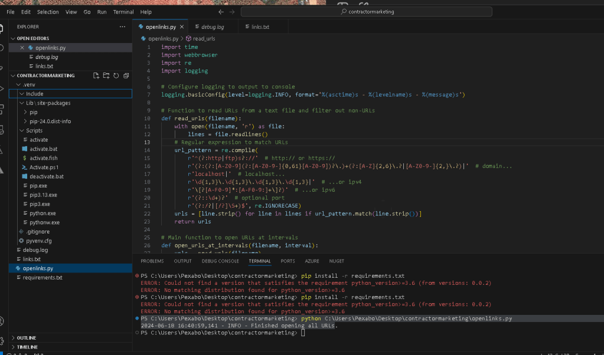
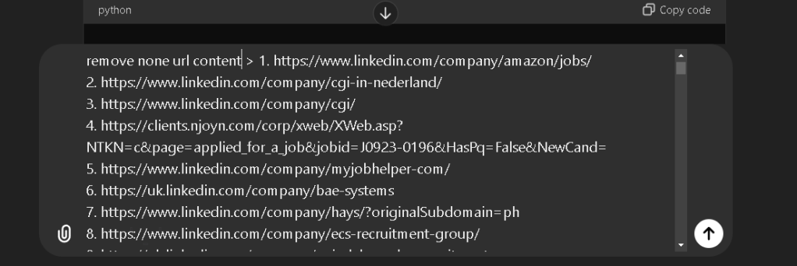
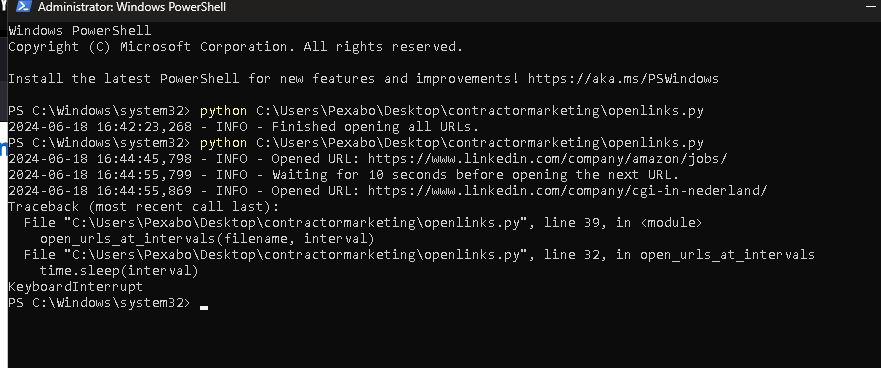
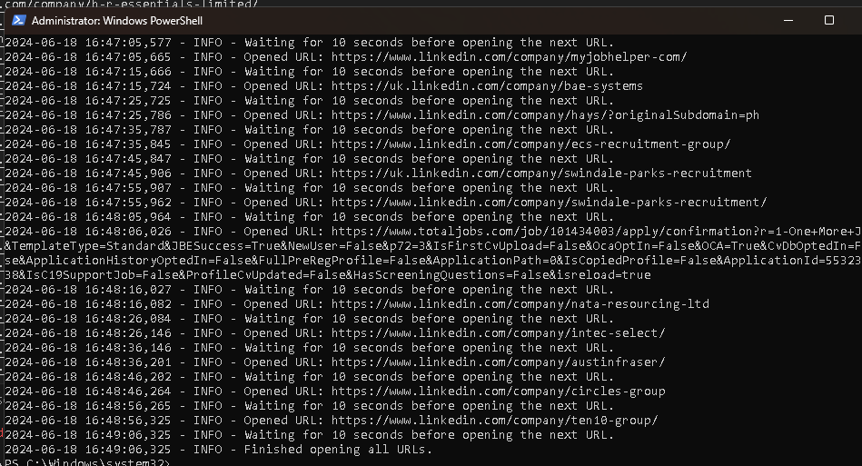

Linkedin Marketing Automation
Add Companies of interest with Python
Sure, here's an updated version of the script that includes a debugger, displays iteration location and time in the console, and ignores non-URL lines in the text file. You can run the script from the specified location:
import time
import webbrowser
import re
Function to read URLs from a text file and filter out non-URLs
def read_urls(filename):
with open(filename, 'r') as file:
lines = file.readlines()
# Regular expression to match URLs
url_pattern = re.compile(
r'^(?:http|ftp)s?://' # http:// or https://
r'(?:(?:A-Z0-9?.)+(?:[A-Z]{2,6}.?|[A-Z0-9-]{2,}.?)|' # domain...
r'localhost|' # localhost...
r'\d{1,3}.\d{1,3}.\d{1,3}.\d{1,3}|' # ...or ipv4
r'[?[A-F0-9]*:[A-F0-9:]+]?)' # ...or ipv6
r'(?::\d+)?' # optional port
r'(?:/?|[/?]\S+)$', re.IGNORECASE)
urls = [line.strip() for line in lines if url_pattern.match(line.strip())]
return urls
Main function to open URLs at intervals with debugger
def open_urls_at_intervals(filename, interval):
urls = read_urls(filename)
for index, url in enumerate(urls):
print(f"Iteration: {index + 1}, Time: {time.strftime('%Y-%m-%d %H:%M:%S')}, URL: {url}")
webbrowser.open(url)
time.sleep(interval)
if name == "main":
import pdb; pdb.set_trace() # Debugger entry point
filename = 'C:\Users\Pexabo\Desktop\contractormarketing\links.txt'
interval = 10 # Interval in seconds
open_urls_at_intervals(filename, interval)
Instructions:
-
Create the
links.txtfile: -
Ensure that you have a
links.txtfile atC:\Users\Pexabo\Desktop\contractormarketing\links.txt. -
This file should contain one URL per line. Non-URL lines will be ignored.
-
Save the script:
-
Save the updated script to
C:\Users\Pexabo\Desktop\contractormarketing\openlinks.py. -
Run the script:
-
Open a terminal or command prompt.
-
Navigate to the directory where your script is saved:
sh cd C:\Users\Pexabo\Desktop\contractormarketing -
Run the script using Python:
sh python openlinks.py
How the script works:
-
URL Validation: The script uses a regular expression to ensure only valid URLs are processed.
-
Debugger: The
pdb.set_trace()line starts the Python debugger, allowing you to step through the code if needed. -
Console Output: For each URL, the script prints the iteration number, current time, and URL to the console.
-
Interval: The script opens each URL at a 10-second interval.
This will ensure that only valid URLs are opened and non-URL lines are ignored. The debugger will help you step through the code if you need to troubleshoot or inspect variables.

error in environment installs
024-06-18 16:38:19.105 [info] > C:\Python313\python.exe ~.vscode\extensions\ms-python.python-2024.8.1\python_files\installed_check.py .\requirements.txt
2024-06-18 16:38:20.548 [info] Running installed packages checker: {
id: 'C:\PYTHON313\PYTHON.EXE',
sysPrefix: 'C:\Python313',
envType: 'Global',
envName: '',
envPath: '',
path: 'C:\Python313\python.exe',
architecture: 3,
sysVersion: '3.13.0b2 (tags/v3.13.0b2:3a83b17, Jun 5 2024, 19:01:25) [MSC v.1940 64 bit (AMD64)]',
version: {
raw: '3.13.0',
major: 3,
minor: 13,
patch: 0,
build: [],
prerelease: [ 'beta', '2' ]
},
displayName: 'Python 3.13.0b2 64-bit',
detailedDisplayName: 'Python 3.13.0b2 64-bit',
type: undefined
} c:\Users\Pexabo.vscode\extensions\ms-python.python-2024.8.1\python_files\installed_check.py c:\Users\Pexabo\Desktop\contractormarketing\requirements.txt
2024-06-18 16:38:20.549 [info] > C:\Python313\python.exe ~.vscode\extensions\ms-python.python-2024.8.1\python_files\installed_check.py .\requirements.txt
2024-06-18 16:38:36.646 [info] Selected workspace c:\Users\Pexabo\Desktop\contractormarketing for creating virtual environment.
2024-06-18 16:38:36.657 [info] Starting Environment refresh
2024-06-18 16:38:36.657 [info] Searching for windows registry interpreters
2024-06-18 16:38:36.657 [info] Searching windows known paths locator
2024-06-18 16:38:36.658 [info] Searching for pyenv environments
2024-06-18 16:38:36.658 [info] Searching for conda environments
2024-06-18 16:38:36.659 [info] Searching for global virtual environments
2024-06-18 16:38:36.659 [info] Searching for custom virtual environments
2024-06-18 16:38:36.659 [info] Searching for windows store envs
2024-06-18 16:38:36.660 [info] > conda info --json
2024-06-18 16:38:36.664 [info] pyenv is not installed
2024-06-18 16:38:36.664 [info] Finished searching for pyenv environments: 7 milliseconds
2024-06-18 16:38:36.664 [info] Finished searching for custom virtual envs: 6 milliseconds
2024-06-18 16:38:36.664 [info] Finished searching for windows store envs: 6 milliseconds
2024-06-18 16:38:36.683 [info] Finished searching for global virtual envs: 25 milliseconds
2024-06-18 16:38:36.700 [info] > C:\Python312\python.exe -I ~.vscode\extensions\ms-python.python-2024.8.1\python_files\get_output_via_markers.py ~.vscode\extensions\ms-python.python-2024.8.1\python_files\interpreterInfo.py
2024-06-18 16:38:36.700 [info] Finished searching windows known paths locator: 44 milliseconds
2024-06-18 16:38:36.883 [info] Finished searching for windows registry interpreters: 235 milliseconds
2024-06-18 16:38:36.886 [info] Environments refresh paths discovered (event): 238 milliseconds
2024-06-18 16:38:36.886 [info] Environments refresh paths discovered: 238 milliseconds
2024-06-18 16:38:36.889 [info] Environments refresh finished (event): 240 milliseconds
2024-06-18 16:38:36.890 [info] Environment refresh took 242 milliseconds
2024-06-18 16:38:38.771 [info] Selected interpreter C:\Python313\python.exe for creating virtual environment.
2024-06-18 16:38:41.317 [info] Running Env creation script: [
'C:\Python313\python.exe',
'c:\Users\Pexabo\.vscode\extensions\ms-python.python-2024.8.1\python_files\create_venv.py',
'--git-ignore',
'--requirements',
'c:\Users\Pexabo\Desktop\contractormarketing\requirements.txt'
]
2024-06-18 16:38:41.317 [info] > C:\Python313\python.exe ~.vscode\extensions\ms-python.python-2024.8.1\python_files\create_venv.py --git-ignore --requirements .\requirements.txt
2024-06-18 16:38:41.317 [info] cwd: .
2024-06-18 16:38:42.377 [info] Running: C:\Python313\python.exe -m venv .venv
2024-06-18 16:38:43.523 [info] Environments refresh finished (event): 5 milliseconds
2024-06-18 16:38:43.523 [info] Environments refresh paths discovered: 5 milliseconds
2024-06-18 16:38:50.070 [info] CREATED_VENV:c:\Users\Pexabo\Desktop\contractormarketing.venv\Scripts\python.exe
2024-06-18 16:38:50.071 [info] CREATE_VENV.UPGRADING_PIP
Running: c:\Users\Pexabo\Desktop\contractormarketing.venv\Scripts\python.exe -m pip install --upgrade pip
2024-06-18 16:38:50.680 [info] Requirement already satisfied: pip in c:\users\pexabo\desktop\contractormarketing.venv\lib\site-packages (24.0)
2024-06-18 16:38:51.498 [info] CREATE_VENV.UPGRADED_PIP
VENV_INSTALLING_REQUIREMENTS: ['c:\Users\Pexabo\Desktop\contractormarketing\requirements.txt']
VENV_INSTALLING_REQUIREMENTS: c:\Users\Pexabo\Desktop\contractormarketing\requirements.txt
Running: c:\Users\Pexabo\Desktop\contractormarketing.venv\Scripts\python.exe -m pip install -r c:\Users\Pexabo\Desktop\contractormarketing\requirements.txt
2024-06-18 16:38:52.465 [info] ERROR: Could not find a version that satisfies the requirement python_version>=3.6 (from versions: 0.0.2)
2024-06-18 16:38:52.465 [info] ERROR: No matching distribution found for python_version>=3.6
2024-06-18 16:38:52.573 [info] Traceback (most recent call last):
2024-06-18 16:38:52.573 [info] File "c:\Users\Pexabo.vscode\extensions\ms-python.python-2024.8.1\python_files\create_venv.py", line 92, in run_process
subprocess.run(args, cwd=os.getcwd(), check=True)
~~~~~~~~~~~~~~^^^^^^^^^^^^^^^^^^^^^^^^^^^^^^^^^^^
File "C:\Python313\Lib\subprocess.py", line 577, in run
raise CalledProcessError(retcode, process.args,
output=stdout, stderr=stderr)
subprocess.CalledProcessError: Command '['c:\Users\Pexabo\Desktop\contractormarketing\.venv\Scripts\python.exe', '-m', 'pip', 'install', '-r', 'c:\Users\Pexabo\Desktop\contractormarketing\requirements.txt']' returned non-zero exit status 1.
2024-06-18 16:38:52.573 [info]
During handling of the above exception, another exception occurred:
Traceback (most recent call last):
2024-06-18 16:38:52.574 [info] File "c:\Users\Pexabo.vscode\extensions\ms-python.python-2024.8.1\python_files\create_venv.py", line 258, in
main(sys.argv[1:])
~~~~^^^^^^^^^^^^^^
File "c:\Users\Pexabo.vscode\extensions\ms-python.python-2024.8.1\python_files\create_venv.py", line 250, in main
install_requirements(venv_path, requirements)
~~~~~~~~~~~~~~~~~~~~^^^^^^^^^^^^^^^^^^^^^^^^^
File "c:\Users\Pexabo.vscode\extensions\ms-python.python-2024.8.1\python_files\create_venv.py", line 112, in install_requirements
run_process(
~~~~~~~~~~~^
[venv_path, "-m", "pip", "install", "-r", requirement],
^^^^^^^^^^^^^^^^^^^^^^^^^^^^^^^^^^^^^^^^^^^^^^^^^^^^^^^
"CREATE_VENV.PIP_FAILED_INSTALL_REQUIREMENTS",
^^^^^^^^^^^^^^^^^^^^^^^^^^^^^^^^^^^^^^^^^^^^^^
)
^
File "c:\Users\Pexabo.vscode\extensions\ms-python.python-2024.8.1\python_files\create_venv.py", line 94, in run_process
raise VenvError(error_message)
2024-06-18 16:38:52.574 [info] VenvError: CREATE_VENV.PIP_FAILED_INSTALL_REQUIREMENTS
2024-06-18 16:38:52.599 [error] Error while running venv creation script: CREATE_VENV.PIP_FAILED_INSTALL_REQUIREMENTS
2024-06-18 16:38:52.599 [error] CREATE_VENV.PIP_FAILED_INSTALL_REQUIREMENTS

environment is there but url is not there

cant find why fix the data

now it works

updated version

Imported from rifaterdemsahin.com · 2024